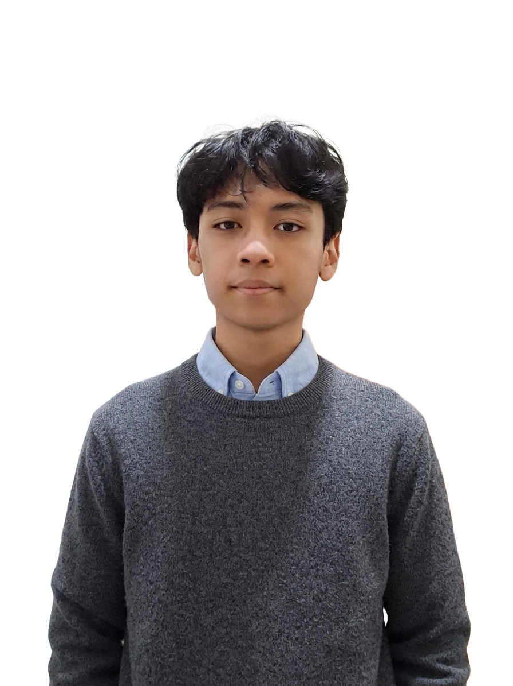
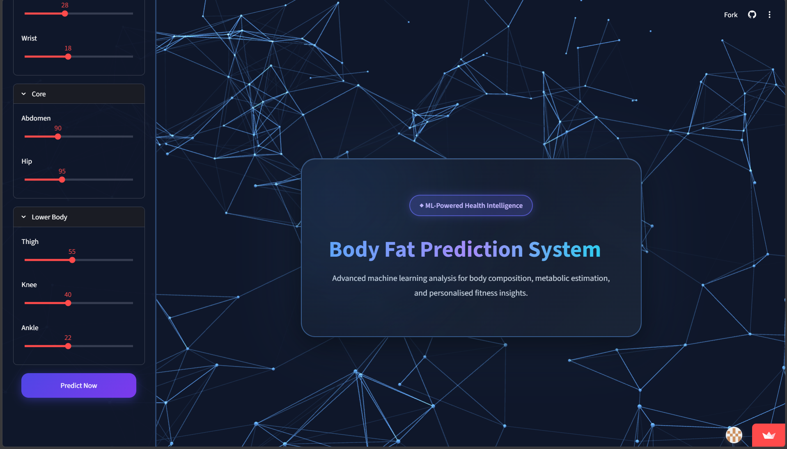
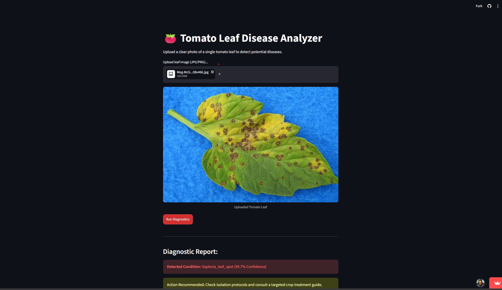
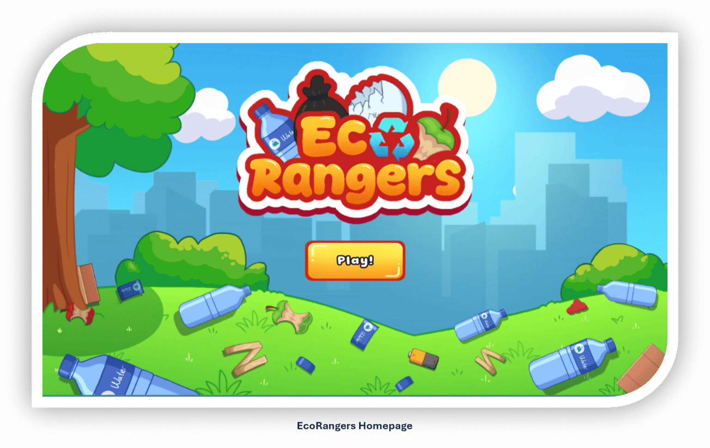

> Hi, my name is
A Data Science student passionate about exploring data, building machine learning models, and solving complex problems through analytics.

Hello! I'm a Data Science major who enjoys turning raw data into actionable insights. My interest in machine learning started when I first explored statistical concepts and classification algorithms.
Currently, my focus is on building robust ML pipelines—from data preprocessing and Exploratory Data Analysis (EDA) to model training and deployment.
Here are a few technologies I've been working with recently:
A machine learning group project application built to predict body fat percentage based on health metrics and gives user recommendation based on the results. Focuses on data preprocessing, feature engineering, and deployment.

Implemented a pre-trained deep learning model (MobileNetV2) to classify tomato leaf diseases using convolutional neural networks (CNNs). Achieved high accuracy through data augmentation and model optimization.

An educational game published on Itch.io designed to teach players about environmental conservation. Assists in analyzing software requirements, coordinating comprehensive support activities, and compiling system reports to manage project schedules and team communication.

04. What's Next?
I am currently looking for new opportunities, data science projects, or collaborations. My inbox is always open whether you have a question or just want to say hi!
Designed & Built by Kristoforus Vinan Adriska
Powered by Tailwind CSS & HTML